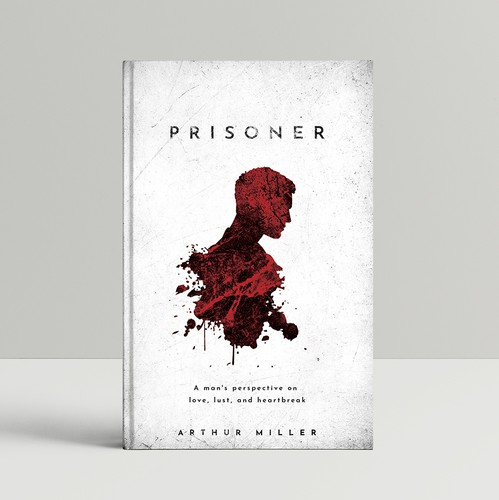
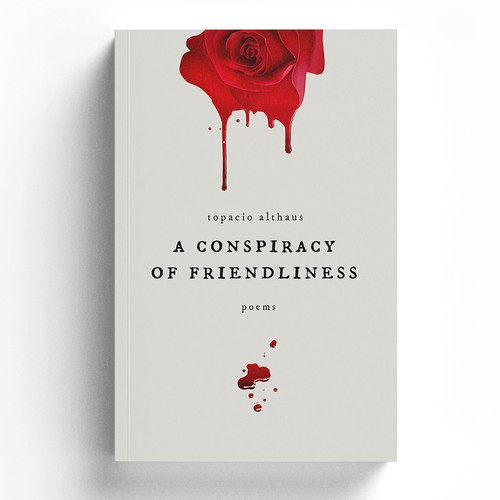
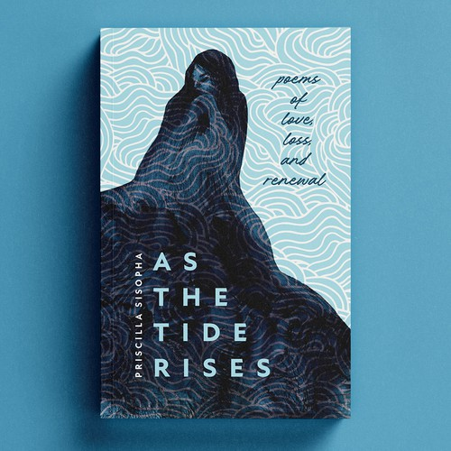
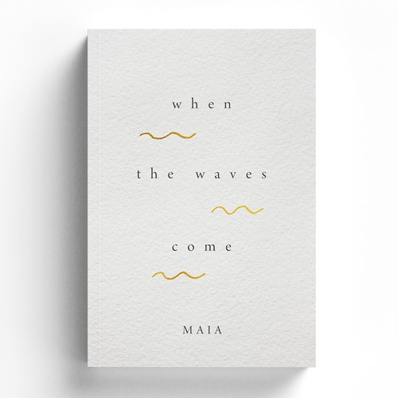
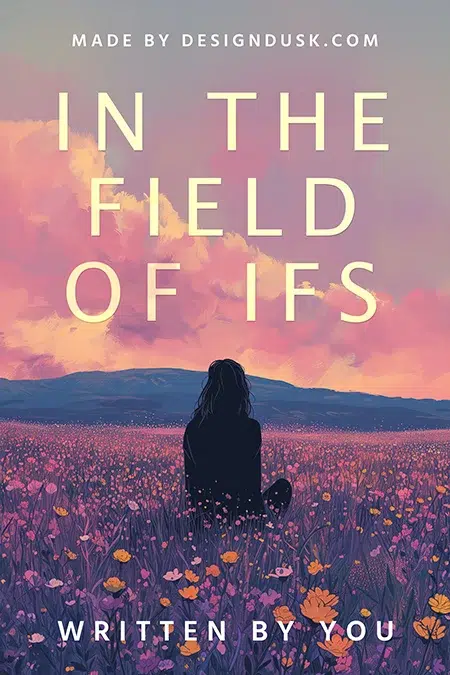
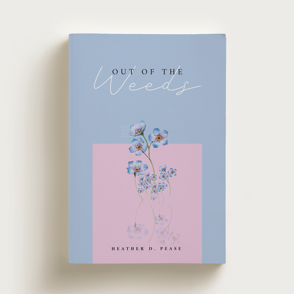
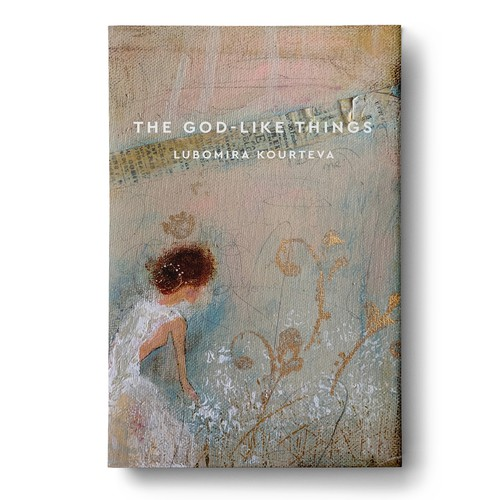
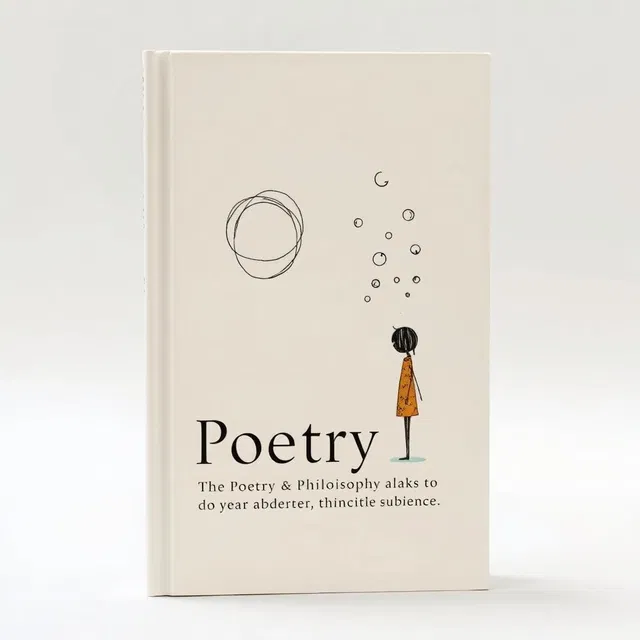

In the poem, the prisoner reflects on his situation and the emotional struggle of being trapped, both physically and mentally. Miller uses the prisoner’s thoughts to show how hope, memory, and imagination can help a person endure difficult circumstances.

a gentle collection of poems that explore emotions, nature, and the quiet moments of everyday life. Through simple but meaningful language, the poems invite readers to slow down and think about their own experiences and dreams.

A Conspiracy of Friendliness by Alexander McCall Smith is a light-hearted novel set in the London apartment building Corduroy Mansions. The story follows the lives of several residents whose everyday problems, friendships, and misunderstandings become intertwined.

As the Tide Rises is a coming-of-age story about a young girl who spends the summer in a coastal town while dealing with family struggles and personal change.

When the Waves Come is a story that explores how people face change, uncertainty, and emotional challenges. Set around the power and symbolism of the ocean

In the Field of Ifs by Alexandra Fuller is a memoir that reflects on the author’s life and the many “what if” moments that shape a person’s choices and identity.

Out of the Weeds is a reflective story about overcoming difficulties and finding a clearer path in life.The book follows a character who feels stuck in confusion, problems

The Godlike Things is a reflective novel about human ambition and the desire to achieve greatness. The story explores how people sometimes try to control their lives and the world around them in ways that seem almost “godlike.”

Love Story is a romantic novel about the relationship between Oliver Barrett, a wealthy Harvard student, and Jenny Cavilleri, a strong-willed music student from a modest background.

Poetry is a form of literature that uses carefully chosen words, rhythm, and imagery to express emotions, ideas, and experiences. Unlike regular writing, poetry often focuses on the beauty and sound of language, using techniques such as rhyme, repetition, and metaphor.

:max_bytes(150000):strip_icc()/GettyImages-168966598-730af106512b408aa1207cef7cd8e763.jpg)